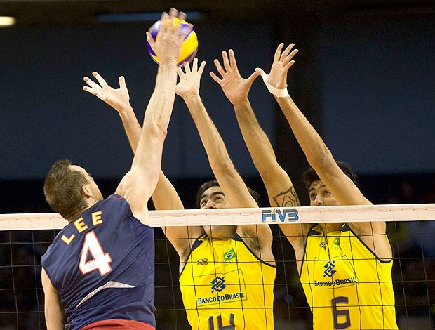

O Bloqueio é uma técnica defensiva onde um ou mais jogadores pulam próximo a rede e como o próprio nome diz, ele é responsável por parar o ataque do time adversário, podendo fazer duas coisas durante a partida: parar definitivamente o ataque ao colocar as mãos na frente da bola ou então amortecer a bola para facilitar a recepção.
